[ English ] | [日本語]


About Hayabusa¶
Hayabusa is a Windows event log fast forensics timeline generator and threat hunting tool created by the Yamato Security group in Japan. Hayabusa means "peregrine falcon" in Japanese and was chosen as peregrine falcons are the fastest animal in the world, great at hunting and highly trainable. It is written in Rust and supports multi-threading in order to be as fast as possible. We have provided a tool to convert Sigma rules into Hayabusa rule format. The Sigma-compatible Hayabusa detection rules are written in YML in order to be as easily customizable and extensible as possible. Hayabusa can be run either on single running systems for live analysis, by gathering logs from single or multiple systems for offline analysis, or by running the Hayabusa artifact with Velociraptor for enterprise-wide threat hunting and incident response. The output will be consolidated into a single CSV timeline for easy analysis in LibreOffice, Timeline Explorer, Elastic Stack, Timesketch, etc..
Companion Projects¶
- EnableWindowsLogSettings - Documentation and scripts to properly enable Windows event logs.
- Hayabusa Rules - Detection rules for hayabusa.
- Hayabusa Sample EVTXs - Sample evtx files to use for testing hayabusa/sigma detection rules.
- Takajo - An analyzer for hayabusa results.
- WELA (Windows Event Log Analyzer) - An analyzer for Windows event logs written in PowerShell.
Table of Contents¶
- About Hayabusa
- Companion Projects
- Table of Contents
- Main Goals
- Screenshots
- Startup
- DFIR Timeline Terminal Output
- Keyword Search Results
- Detection Fequency Timeline (
-Toption) - Results Summary
- HTML Results Summary (
-Hoption) - DFIR Timeline Analysis in LibreOffice (
-MMultiline Output) - DFIR Timeline Analysis in Timeline Explorer
- Critical Alert Filtering and Computer Grouping in Timeline Explorer
- Analysis with the Elastic Stack Dashboard
- Analysis in Timesketch
- Importing and Analyzing Timeline Results
- Analyzing JSON-formatted results with JQ
- Features
- Downloads
- Git Cloning
- Advanced: Compiling From Source (Optional)
- Updating Rust Packages
- Cross-compiling 32-bit Windows Binaries
- macOS Compiling Notes
- Linux Compiling Notes
- Cross-compiling Linux MUSL Binaries
- Running Hayabusa
- Scan Wizard
- Caution: Anti-Virus/EDR Warnings and Slow Runtimes
- Windows
- Linux
- macOS
- Command List
- Analysis Commands:
- DFIR Timeline Commands:
- General Commands:
- Command Usage
- Analysis Commands
computer-metricscommandcomputer-metricscommand examplescomputer-metricsscreenshoteid-metricscommandeid-metricscommand exampleseid-metricscommand config fileeid-metricsscreenshotlogon-summarycommandlogon-summarycommand exampleslogon-summaryscreenshotspivot-keywords-listcommandpivot-keywords-listcommand examplespivot-keywords-listconfig filesearchcommandsearchcommand examplessearchcommand config files
- DFIR Timeline Commands
csv-timelinecommandcsv-timelinecommand examples- Advanced - GeoIP Log Enrichment
csv-timelinecommand config filesjson-timelinecommandjson-timelinecommand examples and config fileslevel-tuningcommandlevel-tuningcommand exampleslevel-tuningconfig filelist-profilescommandset-default-profilecommandset-default-profilecommand examplesupdate-rulescommandupdate-rulescommand example
- Timeline Output
- Output Profiles
- 1.
minimalprofile output - 2.
standardprofile output - 3.
verboseprofile output - 4.
all-field-infoprofile output - 5.
all-field-info-verboseprofile output - 6.
super-verboseprofile output - 7.
timesketch-minimalprofile output - 8.
timesketch-verboseprofile output - Profile Comparison
- Profile Field Aliases
- Extra Profile Field Aliases
- 1.
- Level Abbrevations
- MITRE ATT\&CK Tactics Abbreviations
- Channel Abbreviations
- Other Abbreviations
- Progress Bar
- Color Output
- Results Summary
- Hayabusa Rules
- Sigma v.s. Hayabusa (Built-in Sigma Compatible) Rules
- Other Windows Event Log Analyzers and Related Resources
- Windows Logging Recommendations
- Sysmon Related Projects
- Community Documentation
- English
- Japanese
- Contribution
- Bug Submission
- License
Main Goals¶
Threat Hunting and Enterprise-wide DFIR¶
Hayabusa currently has over 4000 Sigma rules and over 170 Hayabusa built-in detection rules with more rules being added regularly. It can be used for enterprise-wide proactive threat hunting as well as DFIR (Digital Forensics and Incident Response) for free with Velociraptor's Hayabusa artifact. By combining these two open-source tools, you can essentially retroactively reproduce a SIEM when there is no SIEM setup in the environment. You can learn about how to do this by watching Eric Capuano's Velociraptor walkthrough here.
Fast Forensics Timeline Generation¶
Windows event log analysis has traditionally been a very long and tedious process because Windows event logs are 1) in a data format that is hard to analyze and 2) the majority of data is noise and not useful for investigations. Hayabusa's goal is to extract out only useful data and present it in a concise as possible easy-to-read format that is usable not only by professionally trained analysts but any Windows system administrator. Hayabusa hopes to let analysts get 80% of their work done in 20% of the time when compared to traditional Windows event log analysis.
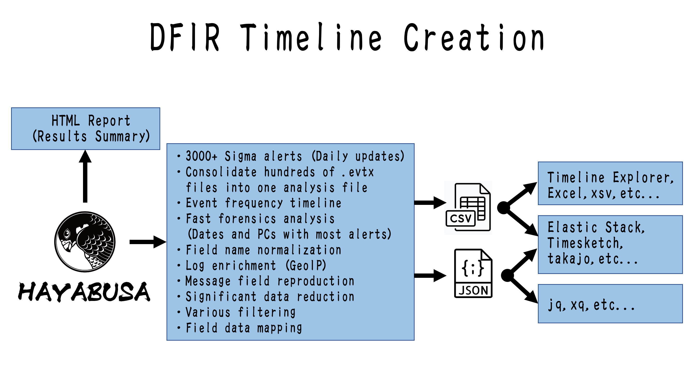
Screenshots¶
Startup¶
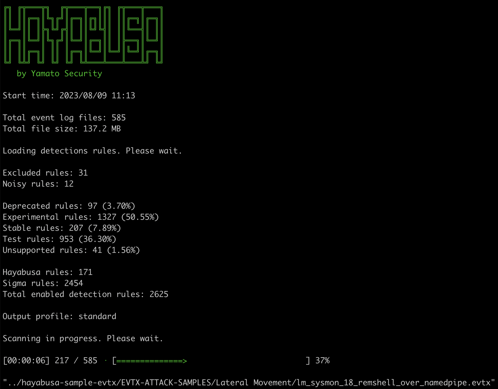
DFIR Timeline Terminal Output¶
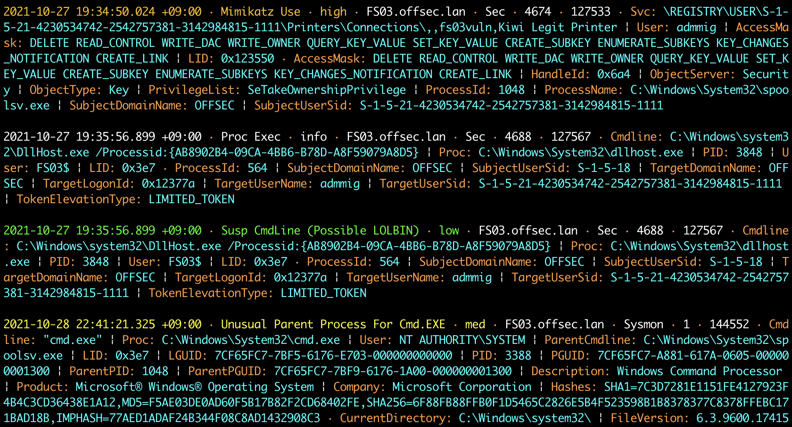
Keyword Search Results¶
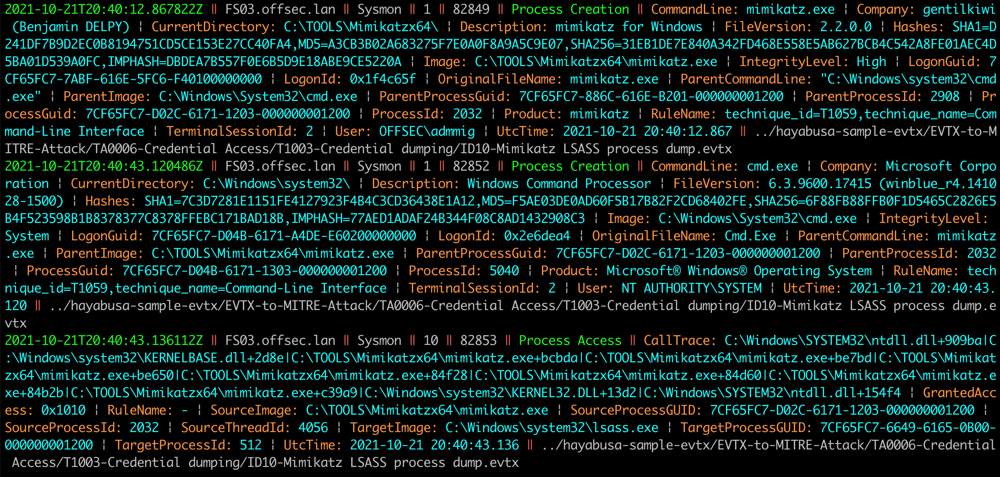
Detection Fequency Timeline (-T option)¶
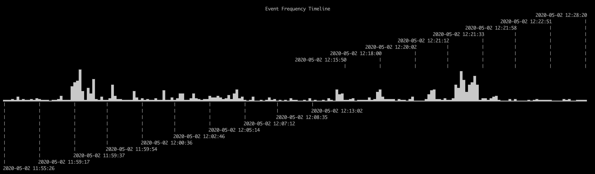
Results Summary¶
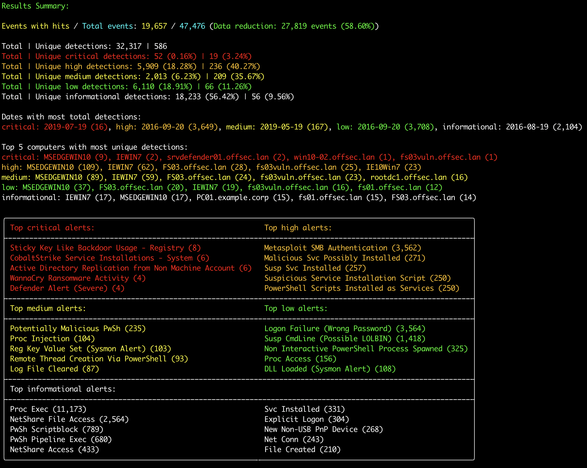
HTML Results Summary (-H option)¶
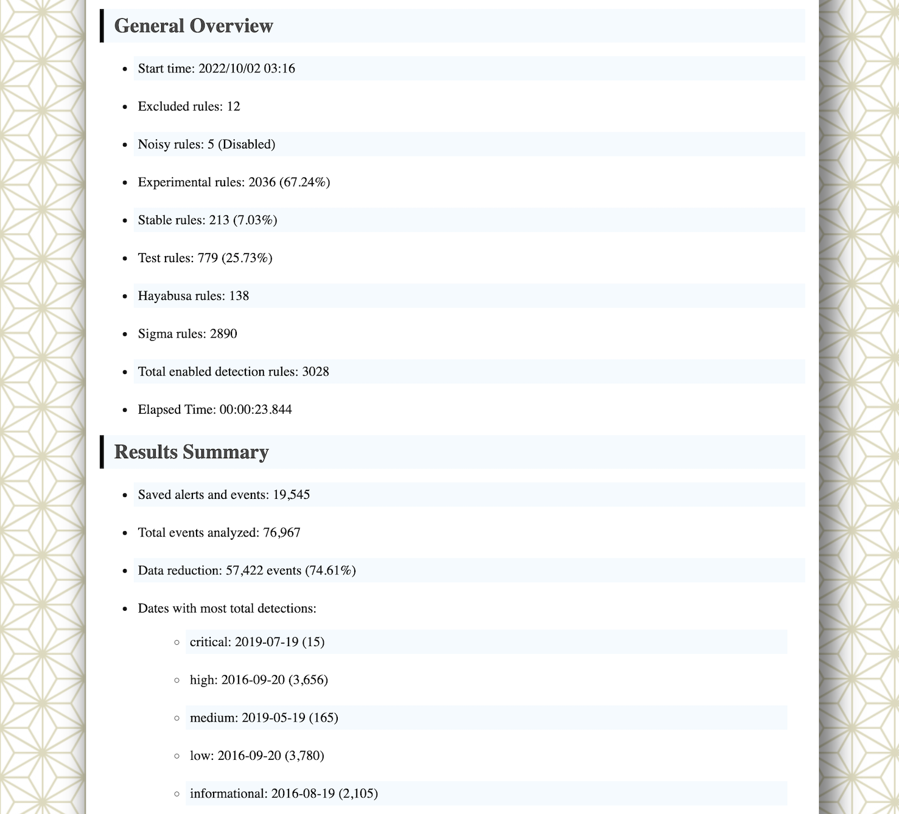
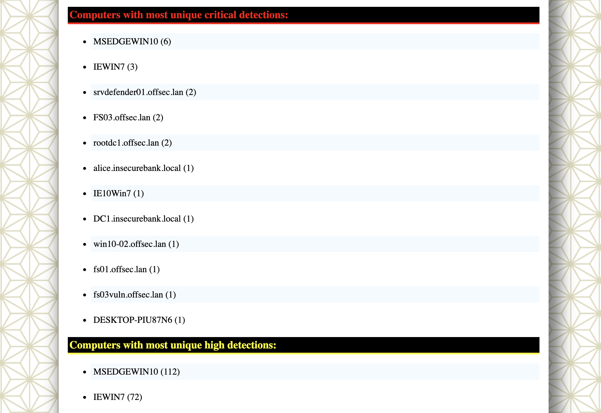
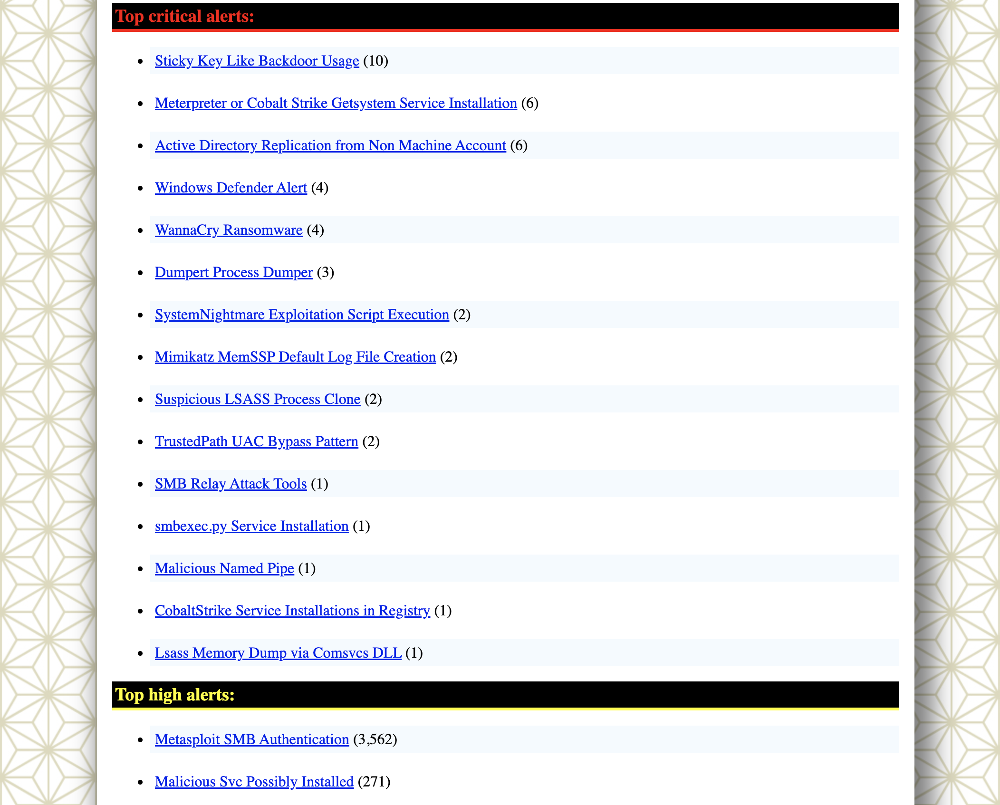
DFIR Timeline Analysis in LibreOffice (-M Multiline Output)¶
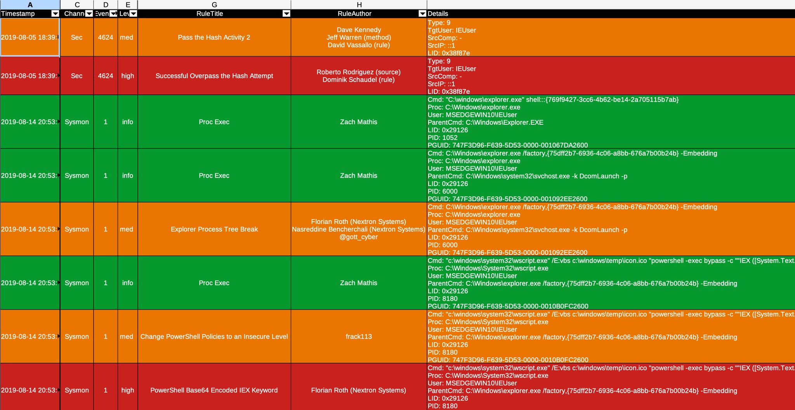
DFIR Timeline Analysis in Timeline Explorer¶
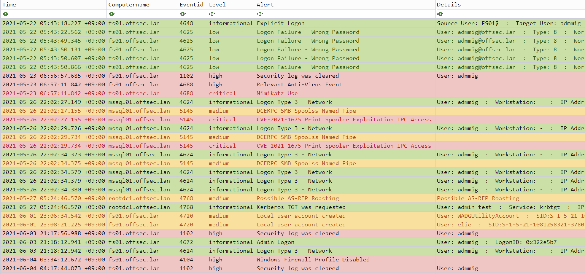
Critical Alert Filtering and Computer Grouping in Timeline Explorer¶
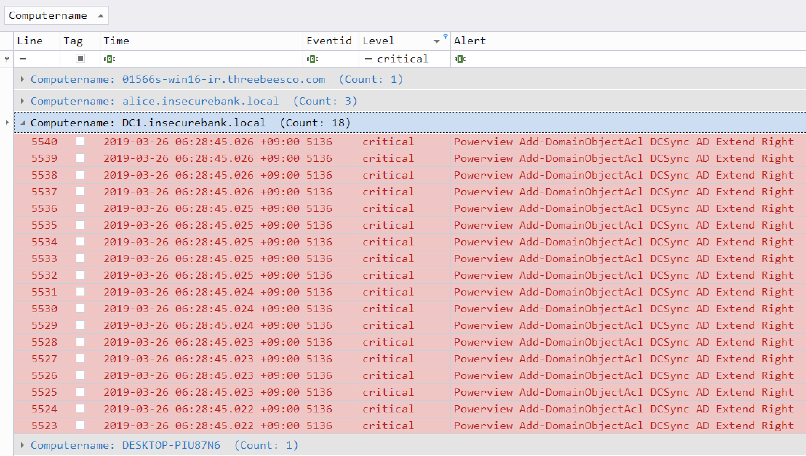
Analysis with the Elastic Stack Dashboard¶


Analysis in Timesketch¶
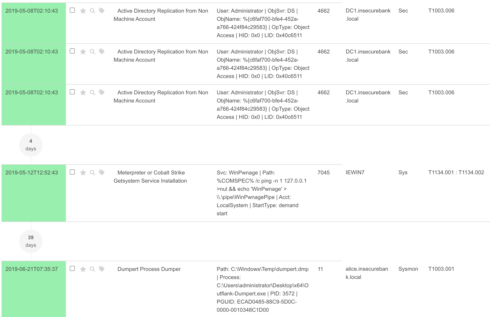
Importing and Analyzing Timeline Results¶
You can learn how to analyze CSV timelines in Excel and Timeline Explorer here.
You can learn how to import CSV files into Elastic Stack here.
You can learn how to import CSV files into Timesketch here.
Analyzing JSON-formatted results with JQ¶
You can learn how to analyze JSON-formatted results with jq here.
Features¶
- Cross-platform support: Windows, Linux, macOS.
- Developed in Rust to be memory safe and fast.
- Multi-thread support delivering up to a 5x speed improvement.
- Creates single easy-to-analyze timelines for forensic investigations and incident response.
- Threat hunting based on IoC signatures written in easy to read/create/edit YML based hayabusa rules.
- Sigma rule support to convert sigma rules to hayabusa rules.
- Currently it supports the most sigma rules compared to other similar tools and even supports count rules and new aggregators such as
|equalsfieldand|endswithfield. - Computer metrics. (Useful for filtering on/out certain computers with a large amount of events.)
- Event ID metrics. (Useful for getting a picture of what types of events there are and for tuning your log settings.)
- Rule tuning configuration by excluding unneeded or noisy rules.
- MITRE ATT&CK mapping of tactics.
- Rule level tuning.
- Create a list of unique pivot keywords to quickly identify abnormal users, hostnames, processes, etc.. as well as correlate events.
- Output all fields for more thorough investigations.
- Successful and failed logon summary.
- Enterprise-wide threat hunting and DFIR on all endpoints with Velociraptor.
- Output to CSV, JSON/JSONL and HTML Summary Reports.
- Daily Sigma rule updates.
- Support for JSON-formatted log input.
- Log field normalization. (Converting multiple fields with different naming conventions into the same field name.)
- Log enrichment by adding GeoIP (ASN, city, country) information to IP addresses.
- Search all events for keywords or regular expressions.
- Field data mapping. (Ex:
0xc0000234->ACCOUNT LOCKED) - Evtx record carving from evtx slack space.
- Event de-duplication when outputting. (Useful when recovery records is enabled or when you include backed up evtx files, evtx files from VSS, etc..)
- Scan setting wizard to help choose which rules to enable easier. (In order to reduce false positives, etc..)
- PowerShell classic log field parsing and extraction.
Downloads¶
Please download the latest stable version of Hayabusa with compiled binaries or compile the source code from the Releases page.
Git Cloning¶
You can git clone the repository with the following command and compile binary from source code:
Warning: The main branch of the repository is for development purposes so you may be able to access new features not yet officially released, however, there may be bugs so consider it unstable.
git clone https://github.com/Yamato-Security/hayabusa.git --recursive
Note: If you forget to use --recursive option, the
rulesfolder, which is managed as a git submodule, will not be cloned.
You can sync the rules folder and get latest Hayabusa rules with git pull --recurse-submodules or use the following command:
hayabusa.exe update-rules
If the update fails, you may need to rename the rules folder and try again.
Caution: When updating, rules and config files in the
rulesfolder are replaced with the latest rules and config files in the hayabusa-rules repository. Any changes you make to existing files will be overwritten, so we recommend that you make backups of any files that you edit before updating. If you are performing level tuning withlevel-tuning, please re-tune your rule files after each update. If you add new rules inside of therulesfolder, they will not be overwritten or deleted when updating.
Advanced: Compiling From Source (Optional)¶
If you have Rust installed, you can compile from source with the following command:
Note: To compile, you usually need the latest version of Rust.
cargo build --release
You can download the latest unstable version from the main branch or the latest stable version from the Releases page.
Be sure to periodically update Rust with:
rustup update stable
The compiled binary will be outputted in the ./target/release folder.
Updating Rust Packages¶
You can update to the latest Rust crates before compiling:
cargo update
Please let us know if anything breaks after you update.
Cross-compiling 32-bit Windows Binaries¶
You can create 32-bit binaries on 64-bit Windows systems with the following:
rustup install stable-i686-pc-windows-msvc
rustup target add i686-pc-windows-msvc
rustup run stable-i686-pc-windows-msvc cargo build --release
Warning: Be sure to run
rustup install stable-i686-pc-windows-msvcwhenever there is a new stable version of Rust asrustup update stablewill not update the compiler for cross compiling and you may receive build errors.
macOS Compiling Notes¶
If you receive compile errors about openssl, you will need to install Homebrew and then install the following packages:
brew install pkg-config
brew install openssl
Linux Compiling Notes¶
If you receive compile errors about openssl, you will need to install the following package.
Ubuntu-based distros:
sudo apt install libssl-dev
Fedora-based distros:
sudo yum install openssl-devel
Cross-compiling Linux MUSL Binaries¶
On a Linux OS, first install the target.
rustup install stable-x86_64-unknown-linux-musl
rustup target add x86_64-unknown-linux-musl
Compile with:
cargo build --release --target=x86_64-unknown-linux-musl
Warning: Be sure to run
rustup install stable-x86_64-unknown-linux-muslwhenever there is a new stable version of Rust asrustup update stablewill not update the compiler for cross compiling and you may receive build errors.
The MUSL binary will be created in the ./target/x86_64-unknown-linux-musl/release/ directory.
MUSL binaries are are about 15% slower than the GNU binaries, however, they are more portable accross different versions and distributions of linux.
Running Hayabusa¶
Scan Wizard¶
Commands like csv-timeline and json-timeline now have a scan wizard enabled by default.
This is intended to help users easily choose which detection rules they want to enable according to their needs and preferences.
The sets of detections rules to load are based off of the official lists in the Sigma project.
Details are explained in this blog post.
You can easily turn off the wizard and use Hayabusa in its traditional way by adding the -w, --no-wizard option.
Core Rules¶
The core rule set enables rules that have a status of test or stable and a level of high or critical.
These are high quality rules of high confidence and relevance and should not produce many false positives.
The rule status is test or stable which means no false positives were reported for over 6 months.
Rules will match on attacker techniques, generic suspicious activity, or malicious behavior.
It is the same as using the --exclude-status deprecated,unsupported,experimental --min-level high options.
Core+ Rules¶
The core+ rule set enables rules that have a status of test or stable and a level of medium or higher.
medium rules most often need additional tuning as certain applications, legitimate user behavior or scripts of an organization might be matched.
It is the same as using the --exclude-status deprecated,unsupported,experimental --min-level medium options.
Core++ Rules¶
The core++ rule set enables rules that have a status of experimental, test or stable and a level of medium or higher.
These rules are bleeding edge.
They are validated against the baseline evtx files available at the SigmaHQ project and reviewed by multiple detection engineers.
Other than that they are pretty much untested at first.
Use these if you want to be able to detect threats as early as possible at the cost of managing a higher threshold of false positives.
It is the same as using the --exclude-status deprecated,unsupported --min-level medium options.
Emerging Threats (ET) Add-On Rules¶
The Emerging Threats (ET) rule set enables rules that have a tag of detection.emerging_threats.
These rules target specific threats and are especially useful for current threats where not much information is available yet.
These rules should not have many false positives but will decrease in relevance over time.
When these rules are not enabled, it is the same as using the --exclude-tag detection.emerging_threats option.
When running Hayabusa traditionally without the wizard, these rules will be included by default.
Threat Hunting (TH) Add-On Rules¶
The Threat Hunting (TH) rule set enables rules that have a tag of detection.threat_hunting.
These rules may detect unknown malicious activity, however, will typicially have more false positives.
When these rules are not enabled, it is the same as using the --exclude-tag detection.threat_hunting option.
When running Hayabusa traditionally without the wizard, these rules will be included by default.
Caution: Anti-Virus/EDR Warnings and Slow Runtimes¶
You may receive an alert from anti-virus or EDR products when trying to run hayabusa or even just when downloading the .yml rules as there will be keywords like mimikatz and suspicious PowerShell commands in the detection signature.
These are false positives so will need to configure exclusions in your security products to allow hayabusa to run.
If you are worried about malware or supply chain attacks, please check the hayabusa source code and compile the binaries yourself.
You may experience slow runtime especially on the first run after a reboot due to the real-time protection of Windows Defender. You can avoid this by temporarily turning real-time protection off or adding an exclusion to the hayabusa runtime directory. (Please take into consideration the security risks before doing these.)
Windows¶
In a Command/PowerShell Prompt or Windows Terminal, just run the appropriate 32-bit or 64-bit Windows binary.
Error when trying to scan a file or directory with a space in the path¶
When using the built-in Command or PowerShell prompt in Windows, you may receive an error that Hayabusa was not able to load any .evtx files if there is a space in your file or directory path. In order to load the .evtx files properly, be sure to do the following: 1. Enclose the file or directory path with double quotes. 2. If it is a directory path, make sure that you do not include a backslash for the last character.
Linux¶
You first need to make the binary executable.
chmod +x ./hayabusa
Then run it from the Hayabusa root directory:
./hayabusa
macOS¶
From Terminal or iTerm2, you first need to make the binary executable.
chmod +x ./hayabusa
Then, try to run it from the Hayabusa root directory:
./hayabusa
On the latest version of macOS, you may receive the following security error when you try to run it:
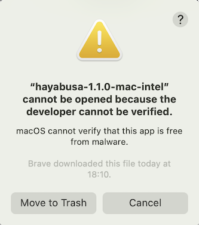
Click "Cancel" and then from System Preferences, open "Security & Privacy" and from the General tab, click "Allow Anyway".
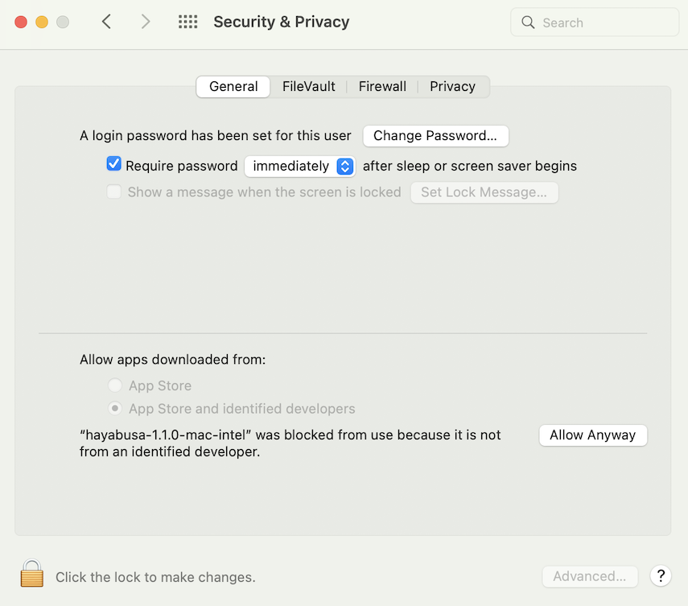
After that, try to run it again.
./hayabusa
The following warning will pop up, so please click "Open".
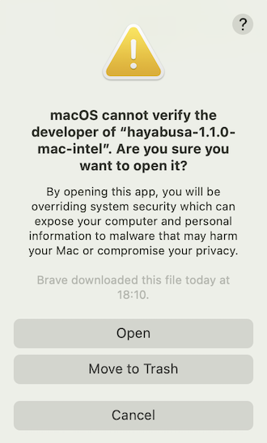
You should now be able to run hayabusa.
Command List¶
Analysis Commands:¶
computer-metrics: Print the number of events based on computer names.eid-metrics: Print the number and percentage of events based on Event ID.logon-summary: Print a summary of logon events.pivot-keywords-list: Print a list of suspicious keywords to pivot on.search: Search all events by keyword(s) or regular expressions
DFIR Timeline Commands:¶
csv-timeline: Save the timeline in CSV format.json-timeline: Save the timeline in JSON/JSONL format.level-tuning: Custom tune the alerts'level.list-profiles: List the available output profiles.set-default-profile: Change the default profile.update-rules: Sync the rules to the latest rules in the hayabusa-rules GitHub repository.
General Commands:¶
help: Print this message or the help of the given subcommand(s)list-contributors: Print the list of contributors
Command Usage¶
Analysis Commands¶
computer-metrics command¶
You can use the computer-metrics command to check how many events there are according to each computer defined in the <System><Computer> field.
Be aware that you cannot completely rely on the Computer field for separating events by their original computer.
Windows 11 will sometimes use completely different Computer names when saving to event logs.
Also, Windows 10 will sometimes record the Computer name in all lowercase.
This command does not use any detection rules so will analyze all events.
This is a good command to run to quickly see which computers have the most logs.
With this information, you can then use the --include-computer or --exclude-computer options when creating your timelines to make your timeline generation more efficient by creating multiple timelines according to computer or exclude events from certain computers.
Usage: computer-metrics <INPUT> [OPTIONS]
Input:
-d, --directory <DIR> Directory of multiple .evtx files
-f, --file <FILE> File path to one .evtx file
-l, --live-analysis Analyze the local C:\Windows\System32\winevt\Logs folder
-J, --JSON-input Scan JSON formatted logs instead of .evtx (.json or .jsonl)
-x, --recover-records Carve evtx records from slack space (default: disabled)
Filtering:
--timeline-offset <OFFSET> Scan recent events based on an offset (ex: 1y, 3M, 30d, 24h, 30m)
Output:
-o, --output <FILE> Save the results in CSV format (ex: computer-metrics.csv)
Display Settings:
--no-color Disable color output
-q, --quiet Quiet mode: do not display the launch banner
-v, --verbose Output verbose information
General Options:
-C, --clobber Overwrite files when saving
-Q, --quiet-errors Quiet errors mode: do not save error logs
-c, --rules-config <DIR> Specify custom rule config directory (default: ./rules/config)
--target-file-ext <FILE-EXT..> Specify additional evtx file extensions (ex: evtx_data)
-t, --threads <NUMBER> Number of threads (default: optimal number for performance)
computer-metrics command examples¶
- Print computer name metrics from a directory:
hayabusa.exe computer-metrics -d ../logs - Save results to a CSV file:
hayabusa.exe computer-metrics -d ../logs -o computer-metrics.csv
computer-metrics screenshot¶
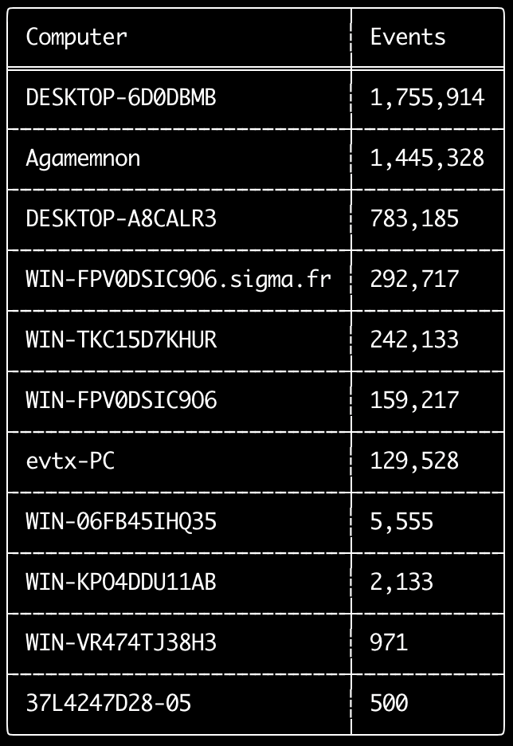
eid-metrics command¶
You can use the eid-metrics command to print out the total number and percentage of event IDs (<System><EventID> field) seperated by channels.
This command does not use any detection rules so will scan all events.
Usage: eid-metrics <INPUT> [OPTIONS]
Input:
-d, --directory <DIR> Directory of multiple .evtx files
-f, --file <FILE> File path to one .evtx file
-l, --live-analysis Analyze the local C:\Windows\System32\winevt\Logs folder
-J, --JSON-input Scan JSON formatted logs instead of .evtx (.json or .jsonl)
-x, --recover-records Carve evtx records from slack space (default: disabled)
Filtering:
--exclude-computer <COMPUTER..> Do not scan specified computer names (ex: ComputerA) (ex: ComputerA,ComputerB)
--include-computer <COMPUTER..> Scan only specified computer names (ex: ComputerA) (ex: ComputerA,ComputerB)
--timeline-offset <OFFSET> Scan recent events based on an offset (ex: 1y, 3M, 30d, 24h, 30m)
Output:
-o, --output <FILE> Save the Metrics in CSV format (ex: metrics.csv)
Display Settings:
--no-color Disable color output
-q, --quiet Quiet mode: do not display the launch banner
-v, --verbose Output verbose information
General Options:
-C, --clobber Overwrite files when saving
-Q, --quiet-errors Quiet errors mode: do not save error logs
-c, --rules-config <DIR> Specify custom rule config directory (default: ./rules/config)
--target-file-ext <FILE-EXT..> Specify additional evtx file extensions (ex: evtx_data)
-t, --threads <NUMBER> Number of threads (default: optimal number for performance)
Time Format:
--European-time Output timestamp in European time format (ex: 22-02-2022 22:00:00.123 +02:00)
--ISO-8601 Output timestamp in ISO-8601 format (ex: 2022-02-22T10:10:10.1234567Z) (Always UTC)
--RFC-2822 Output timestamp in RFC 2822 format (ex: Fri, 22 Feb 2022 22:00:00 -0600)
--RFC-3339 Output timestamp in RFC 3339 format (ex: 2022-02-22 22:00:00.123456-06:00)
--US-military-time Output timestamp in US military time format (ex: 02-22-2022 22:00:00.123 -06:00)
--US-time Output timestamp in US time format (ex: 02-22-2022 10:00:00.123 PM -06:00)
-U, --UTC Output time in UTC format (default: local time)
eid-metrics command examples¶
- Print Event ID metrics from a single file:
hayabusa.exe eid-metrics -f Security.evtx - Print Event ID metrics from a directory:
hayabusa.exe eid-metrics -d ../logs - Save results to a CSV file:
hayabusa.exe eid-metrics -f Security.evtx -o eid-metrics.csv
eid-metrics command config file¶
The channel, event IDs and titles of the events are defined in rules/config/channel_eid_info.txt.
Example:
Channel,EventID,EventTitle
Microsoft-Windows-Sysmon/Operational,1,Process Creation.
Microsoft-Windows-Sysmon/Operational,2,File Creation Timestamp Changed. (Possible Timestomping)
Microsoft-Windows-Sysmon/Operational,3,Network Connection.
Microsoft-Windows-Sysmon/Operational,4,Sysmon Service State Changed.
eid-metrics screenshot¶
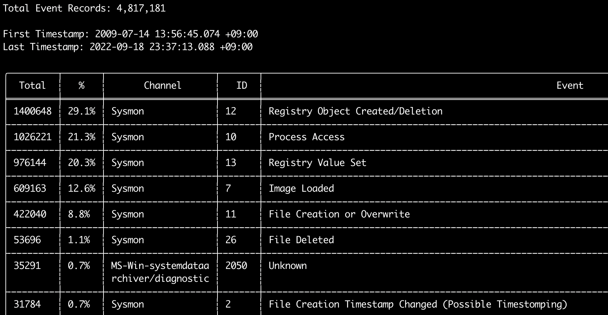
logon-summary command¶
You can use the logon-summary command to output logon information summary (logon usernames and successful and failed logon count).
You can display the logon information for one evtx file with -f or multiple evtx files with the -d option.
Usage: logon-summary <INPUT> [OPTIONS]
Input:
-d, --directory <DIR> Directory of multiple .evtx files
-f, --file <FILE> File path to one .evtx file
-l, --live-analysis Analyze the local C:\Windows\System32\winevt\Logs folder
-J, --JSON-input Scan JSON formatted logs instead of .evtx (.json or .jsonl)
-x, --recover-records Carve evtx records from slack space (default: disabled)
Filtering:
--exclude-computer <COMPUTER..> Do not scan specified computer names (ex: ComputerA) (ex: ComputerA,ComputerB)
--include-computer <COMPUTER..> Scan only specified computer names (ex: ComputerA) (ex: ComputerA,ComputerB)
--timeline-end <DATE> End time of the event logs to load (ex: "2022-02-22 23:59:59 +09:00")
--timeline-offset <OFFSET> Scan recent events based on an offset (ex: 1y, 3M, 30d, 24h, 30m)
--timeline-start <DATE> Start time of the event logs to load (ex: "2020-02-22 00:00:00 +09:00")
Output:
-o, --output <FILENAME-PREFIX> Save the logon summary to two CSV files (ex: -o logon-summary)
Display Settings:
--no-color Disable color output
-q, --quiet Quiet mode: do not display the launch banner
-v, --verbose Output verbose information
General Options:
-C, --clobber Overwrite files when saving
-Q, --quiet-errors Quiet errors mode: do not save error logs
-c, --rules-config <DIR> Specify custom rule config directory (default: ./rules/config)
--target-file-ext <FILE-EXT..> Specify additional evtx file extensions (ex: evtx_data)
-t, --threads <NUMBER> Number of threads (default: optimal number for performance)
Time Format:
--European-time Output timestamp in European time format (ex: 22-02-2022 22:00:00.123 +02:00)
--ISO-8601 Output timestamp in ISO-8601 format (ex: 2022-02-22T10:10:10.1234567Z) (Always UTC)
--RFC-2822 Output timestamp in RFC 2822 format (ex: Fri, 22 Feb 2022 22:00:00 -0600)
--RFC-3339 Output timestamp in RFC 3339 format (ex: 2022-02-22 22:00:00.123456-06:00)
--US-military-time Output timestamp in US military time format (ex: 02-22-2022 22:00:00.123 -06:00)
--US-time Output timestamp in US time format (ex: 02-22-2022 10:00:00.123 PM -06:00)
-U, --UTC Output time in UTC format (default: local time)
logon-summary command examples¶
- Print logon summary:
hayabusa.exe logon-summary -f Security.evtx - Save logon summary results:
hayabusa.exe logon-summary -d ../logs -o logon-summary.csv
logon-summary screenshots¶
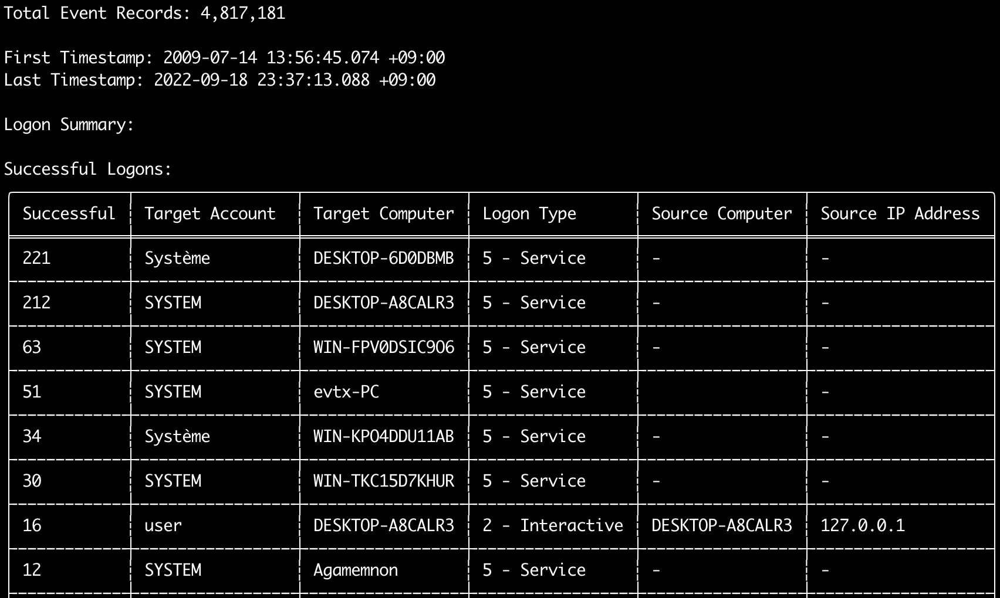
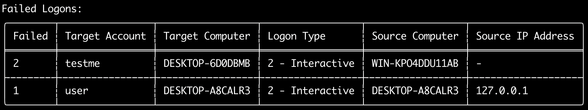
pivot-keywords-list command¶
You can use the pivot-keywords-list command to create a list of unique pivot keywords to quickly identify abnormal users, hostnames, processes, etc.. as well as correlate events.
Important: by default, hayabusa will return results from all events (informational and higher) so we highly recommend combining the pivot-keywords-list command with the -m, --min-level option.
For example, start off with only creating keywords from critical alerts with -m critical and then continue with -m high, -m medium, etc..
There will most likely be common keywords in your results that will match on many normal events, so after manually checking the results and creating a list of unique keywords in a single file, you can then create a narrowed down timeline of suspicious activity with a command like grep -f keywords.txt timeline.csv.
Usage: pivot-keywords-list <INPUT> [OPTIONS]
Input:
-d, --directory <DIR> Directory of multiple .evtx files
-f, --file <FILE> File path to one .evtx file
-l, --live-analysis Analyze the local C:\Windows\System32\winevt\Logs folder
-J, --JSON-input Scan JSON formatted logs instead of .evtx (.json or .jsonl)
-x, --recover-records Carve evtx records from slack space (default: disabled)
Filtering:
-E, --EID-filter Scan only common EIDs for faster speed (./rules/config/target_event_IDs.txt)
-D, --enable-deprecated-rules Enable rules with a status of deprecated
-n, --enable-noisy-rules Enable rules set to noisy (./rules/config/noisy_rules.txt)
-u, --enable-unsupported-rules Enable rules with a status of unsupported
-e, --exact-level <LEVEL> Only load rules with a specific level (informational, low, medium, high, critical)
--exclude-computer <COMPUTER..> Do not scan specified computer names (ex: ComputerA) (ex: ComputerA,ComputerB)
--exclude-eid <EID..> Do not scan specific EIDs for faster speed (ex: 1) (ex: 1,4688)
--exclude-status <STATUS..> Do not load rules according to status (ex: experimental) (ex: stable,test)
--exclude-tag <TAG..> Do not load rules with specific tags (ex: sysmon)
--include-computer <COMPUTER..> Scan only specified computer names (ex: ComputerA) (ex: ComputerA,ComputerB)
--include-eid <EID..> Scan only specified EIDs for faster speed (ex: 1) (ex: 1,4688)
--include-tag <TAG..> Only load rules with specific tags (ex: attack.execution,attack.discovery)
-m, --min-level <LEVEL> Minimum level for rules to load (default: informational)
--timeline-end <DATE> End time of the event logs to load (ex: "2022-02-22 23:59:59 +09:00")
--timeline-offset <OFFSET> Scan recent events based on an offset (ex: 1y, 3M, 30d, 24h, 30m)
--timeline-start <DATE> Start time of the event logs to load (ex: "2020-02-22 00:00:00 +09:00")
Output:
-o, --output <FILENAME-PREFIX> Save pivot words to separate files (ex: PivotKeywords)
Display Settings:
--no-color Disable color output
-q, --quiet Quiet mode: do not display the launch banner
-v, --verbose Output verbose information
General Options:
-C, --clobber Overwrite files when saving
-Q, --quiet-errors Quiet errors mode: do not save error logs
-c, --rules-config <DIR> Specify custom rule config directory (default: ./rules/config)
--target-file-ext <FILE-EXT..> Specify additional evtx file extensions (ex: evtx_data)
-t, --threads <NUMBER> Number of threads (default: optimal number for performance)
pivot-keywords-list command examples¶
- Output pivot keywords to screen:
hayabusa.exe pivot-keywords-list -d ../logs -m critical - Create a list of pivot keywords from critical alerts and save the results. (Results will be saved to
keywords-Ip Addresses.txt,keywords-Users.txt, etc..):
hayabusa.exe pivot-keywords-list -d ../logs -m critical -o keywords`
pivot-keywords-list config file¶
You can customize what keywords you want to search for by editing ./rules/config/pivot_keywords.txt.
This page is the default setting.
The format is KeywordName.FieldName. For example, when creating the list of Users, hayabusa will list up all the values in the SubjectUserName, TargetUserName and User fields.
search command¶
The search command will let you keyword search on all events.
(Not just Hayabusa detection results.)
This is useful to determine if there is any evidence in events that are not detected by Hayabusa.
Usage: hayabusa.exe search <INPUT> <--keywords "<KEYWORDS>" OR --regex "<REGEX>"> [OPTIONS]
Display Settings:
--no-color Disable color output
-q, --quiet Quiet mode: do not display the launch banner
-v, --verbose Output verbose information
Input:
-d, --directory <DIR> Directory of multiple .evtx files
-f, --file <FILE> File path to one .evtx file
-l, --live-analysis Analyze the local C:\Windows\System32\winevt\Logs folder
-x, --recover-records Carve evtx records from slack space (default: disabled)
Filtering:
-a, --and-logic Search keywords with AND logic (default: OR)
-F, --filter <FILTER..> Filter by specific field(s)
-i, --ignore-case Case-insensitive keyword search
-k, --keyword <KEYWORD..> Search by keyword(s)
-r, --regex <REGEX> Search by regular expression
--timeline-offset <OFFSET> Scan recent events based on an offset (ex: 1y, 3M, 30d, 24h, 30m)
Output:
-J, --JSON-output Save the search results in JSON format (ex: -J -o results.json)
-L, --JSONL-output Save the search results in JSONL format (ex: -L -o results.jsonl)
-M, --multiline Output event field information in multiple rows for CSV output
-o, --output <FILE> Save the search results in CSV format (ex: search.csv)
General Options:
-C, --clobber Overwrite files when saving
-Q, --quiet-errors Quiet errors mode: do not save error logs
-c, --rules-config <DIR> Specify custom rule config directory (default: ./rules/config)
--target-file-ext <FILE-EXT..> Specify additional evtx file extensions (ex: evtx_data)
-t, --threads <NUMBER> Number of threads (default: optimal number for performance)
Time Format:
--European-time Output timestamp in European time format (ex: 22-02-2022 22:00:00.123 +02:00)
--ISO-8601 Output timestamp in ISO-8601 format (ex: 2022-02-22T10:10:10.1234567Z) (Always UTC)
--RFC-2822 Output timestamp in RFC 2822 format (ex: Fri, 22 Feb 2022 22:00:00 -0600)
--RFC-3339 Output timestamp in RFC 3339 format (ex: 2022-02-22 22:00:00.123456-06:00)
--US-military-time Output timestamp in US military time format (ex: 02-22-2022 22:00:00.123 -06:00)
--US-time Output timestamp in US time format (ex: 02-22-2022 10:00:00.123 PM -06:00)
-U, --UTC Output time in UTC format (default: local time)
search command examples¶
- Search the
../hayabusa-sample-evtxdirectory for the keywordmimikatz:
hayabusa.exe search -d ../hayabusa-sample-evtx -k "mimikatz"
Note: The keyword will match if
mimikatzis found anywhere in the data. It is not an exact match.
- Search the
../hayabusa-sample-evtxdirectory for the keywordsmimikatzorkali:
hayabusa.exe search -d ../hayabusa-sample-evtx -k "mimikatz" -k "kali"
- Search the
../hayabusa-sample-evtxdirectory for the keywordmimikatzand ignore case:
hayabusa.exe search -d ../hayabusa-sample-evtx -k "mimikatz" -i
- Search the
../hayabusa-sample-evtxdirectory for IP addresses using regular expressions:
hayabusa.exe search -d ../hayabusa-sample-evtx -r "(?:[0-9]{1,3}\.){3}[0-9]{1,3}"
- Search the
../hayabusa-sample-evtxdirectory and show all events where theWorkstationNamefield iskali:
hayabusa.exe search -d ../hayabusa-sample-evtx -r ".*" -F WorkstationName:"kali"
Note:
.*is the regular expression to match on every event.
search command config files¶
./rules/config/channel_abbreviations.txt: Mappings of channel names and their abbreviations.
DFIR Timeline Commands¶
csv-timeline command¶
The csv-timeline command will create a forensics timeline of events in CSV format.
Usage: csv-timeline <INPUT> [OPTIONS]
Input:
-d, --directory <DIR> Directory of multiple .evtx files
-f, --file <FILE> File path to one .evtx file
-l, --live-analysis Analyze the local C:\Windows\System32\winevt\Logs folder
-J, --JSON-input Scan JSON formatted logs instead of .evtx (.json or .jsonl)
-x, --recover-records Carve evtx records from slack space (default: disabled)
Filtering:
-E, --EID-filter Scan only common EIDs for faster speed (./rules/config/target_event_IDs.txt)
-D, --enable-deprecated-rules Enable rules with a status of deprecated
-n, --enable-noisy-rules Enable rules set to noisy (./rules/config/noisy_rules.txt)
-u, --enable-unsupported-rules Enable rules with a status of unsupported
-e, --exact-level <LEVEL> Only load rules with a specific level (informational, low, medium, high, critical)
--exclude-category <CATEGORY..> Do not load rules with specified logsource categories (ex: process_creation,pipe_created)
--exclude-computer <COMPUTER..> Do not scan specified computer names (ex: ComputerA) (ex: ComputerA,ComputerB)
--exclude-eid <EID..> Do not scan specific EIDs for faster speed (ex: 1) (ex: 1,4688)
--exclude-status <STATUS..> Do not load rules according to status (ex: experimental) (ex: stable,test)
--exclude-tag <TAG..> Do not load rules with specific tags (ex: sysmon)
--include-category <CATEGORY..> Only load rules with specified logsource categories (ex: process_creation,pipe_created)
--include-computer <COMPUTER..> Scan only specified computer names (ex: ComputerA) (ex: ComputerA,ComputerB)
--include-eid <EID..> Scan only specified EIDs for faster speed (ex: 1) (ex: 1,4688)
--include-tag <TAG..> Only load rules with specific tags (ex: attack.execution,attack.discovery)
-m, --min-level <LEVEL> Minimum level for rules to load (default: informational)
-P, --proven-rules Scan with only proven rules for faster speed (./rules/config/proven_rules.txt)
--timeline-end <DATE> End time of the event logs to load (ex: "2022-02-22 23:59:59 +09:00")
--timeline-offset <OFFSET> Scan recent events based on an offset (ex: 1y, 3M, 30d, 24h, 30m)
--timeline-start <DATE> Start time of the event logs to load (ex: "2020-02-22 00:00:00 +09:00")
Output:
-G, --GeoIP <MAXMIND-DB-DIR> Add GeoIP (ASN, city, country) info to IP addresses
-H, --HTML-report <FILE> Save Results Summary details to an HTML report (ex: results.html)
-M, --multiline Output event field information in multiple rows
-F, --no-field-data-mapping Disable field data mapping
--no-pwsh-field-extraction Disable field extraction of PowerShell classic logs
-o, --output <FILE> Save the timeline in CSV format (ex: results.csv)
-p, --profile <PROFILE> Specify output profile
-R, --remove-duplicate-data Duplicate field data will be replaced with "DUP"
-X, --remove-duplicate-detections Remove duplicate detections (default: disabled)
Display Settings:
--no-color Disable color output
-N, --no-summary Do not display Results Summary for faster speed
-q, --quiet Quiet mode: do not display the launch banner
-v, --verbose Output verbose information
-T, --visualize-timeline Output event frequency timeline (terminal needs to support unicode)
General Options:
-C, --clobber Overwrite files when saving
-w, --no-wizard Do not ask questions. Scan for all events and alerts
-Q, --quiet-errors Quiet errors mode: do not save error logs
-r, --rules <DIR/FILE> Specify a custom rule directory or file (default: ./rules)
-c, --rules-config <DIR> Specify custom rule config directory (default: ./rules/config)
--target-file-ext <FILE-EXT..> Specify additional evtx file extensions (ex: evtx_data)
-t, --threads <NUMBER> Number of threads (default: optimal number for performance)
Time Format:
--European-time Output timestamp in European time format (ex: 22-02-2022 22:00:00.123 +02:00)
--ISO-8601 Output timestamp in ISO-8601 format (ex: 2022-02-22T10:10:10.1234567Z) (Always UTC)
--RFC-2822 Output timestamp in RFC 2822 format (ex: Fri, 22 Feb 2022 22:00:00 -0600)
--RFC-3339 Output timestamp in RFC 3339 format (ex: 2022-02-22 22:00:00.123456-06:00)
--US-military-time Output timestamp in US military time format (ex: 02-22-2022 22:00:00.123 -06:00)
--US-time Output timestamp in US time format (ex: 02-22-2022 10:00:00.123 PM -06:00)
-U, --UTC Output time in UTC format (default: local time)
csv-timeline command examples¶
- Run hayabusa against one Windows event log file with default
standardprofile:
hayabusa.exe csv-timeline -f eventlog.evtx
- Run hayabusa against the sample-evtx directory with multiple Windows event log files with the verbose profile:
hayabusa.exe csv-timeline -d .\hayabusa-sample-evtx -p verbose
- Export to a single CSV file for further analysis with LibreOffice, Timeline Explorer, Elastic Stack, etc.. and include all field information (Warning: your file output size will become much larger with the
super-verboseprofile!):
hayabusa.exe csv-timeline -d .\hayabusa-sample-evtx -o results.csv -p super-verbose
- Enable the EID (Event ID) filter:
Note: Enabling the EID filter will speed up the analysis by about 10-15% in our tests but there is a possibility of missing alerts.
hayabusa.exe csv-timeline -E -d .\hayabusa-sample-evtx -o results.csv
- Only run hayabusa rules (the default is to run all the rules in
-r .\rules):
hayabusa.exe csv-timeline -d .\hayabusa-sample-evtx -r .\rules\hayabusa -o results.csv -w
- Only run hayabusa rules for logs that are enabled by default on Windows:
hayabusa.exe csv-timeline -d .\hayabusa-sample-evtx -r .\rules\hayabusa\builtin -o results.csv -w
- Only run hayabusa rules for sysmon logs:
hayabusa.exe csv-timeline -d .\hayabusa-sample-evtx -r .\rules\hayabusa\sysmon -o results.csv -w
- Only run sigma rules:
hayabusa.exe csv-timeline -d .\hayabusa-sample-evtx -r .\rules\sigma -o results.csv -w
- Enable deprecated rules (those with
statusmarked asdeprecated) and noisy rules (those whose rule ID is listed in.\rules\config\noisy_rules.txt):
Note: Recently, deprecated rules are now located in a separate directory in the sigma repository so are not included by default anymore in Hayabusa. Therefore, you probably have no need to enable deprecated rules.
hayabusa.exe csv-timeline -d .\hayabusa-sample-evtx --enable-noisy-rules --enable-deprecated-rules -o results.csv -w
- Only run rules to analyze logons and output in the UTC timezone:
hayabusa.exe csv-timeline -d .\hayabusa-sample-evtx -r .\rules\hayabusa\builtin\Security\LogonLogoff\Logon -U -o results.csv -w
- Run on a live Windows machine (requires Administrator privileges) and only detect alerts (potentially malicious behavior):
hayabusa.exe csv-timeline -l -m low
- Print verbose information (useful for determining which files take long to process, parsing errors, etc..):
hayabusa.exe csv-timeline -d .\hayabusa-sample-evtx -v
- Verbose output example:
Loading rules:
Loaded rule: rules/sigma/builtin/deprecated/proc_creation_win_susp_run_folder.yml
Loaded rule: rules/sigma/builtin/deprecated/proc_creation_win_execution_mssql_xp_cmdshell_stored_procedure.yml
Loaded rule: rules/sigma/builtin/deprecated/proc_creation_win_susp_squirrel_lolbin.yml
Loaded rule: rules/sigma/builtin/win_alert_mimikatz_keywords.yml
Errors during the scan:
[ERROR] Failed to parse event file.
EventFile: ../logs/Microsoft-Rdms-UI%4Operational.evtx
Error: Failed to parse record number 58471
[ERROR] Failed to parse event file.
EventFile: ../logs/Microsoft-Rdms-UI%4Operational.evtx
Error: Failed to parse record number 58470
[ERROR] Failed to parse event file.
EventFile: ../logs/Microsoft-Windows-AppxPackaging%4Operational.evtx
Error: An error occurred while trying to serialize binary xml to output.
- Output to a CSV format compatible to import into Timesketch:
hayabusa.exe csv-timeline -d ../hayabusa-sample-evtx --RFC-3339 -o timesketch-import.csv -p timesketch -U
- Quiet error mode:
By default, hayabusa will save error messages to error log files.
If you do not want to save error messages, please add
-Q.
Advanced - GeoIP Log Enrichment¶
You can add GeoIP (ASN organization, city and country) information to SrcIP (source IP) fields and TgtIP (target IP) fields with the free GeoLite2 geolocation data.
Steps:
1. First sign up for a MaxMind account here.
2. Download the three .mmdb files from the download page and save them to a directory. The filenames should be called GeoLite2-ASN.mmdb, GeoLite2-City.mmdb and GeoLite2-Country.mmdb.
3. When running the csv-timeline or json-timeline commands, add the -G option followed by the directory with the MaxMind databases.
- When
csv-timelineis used, the following 6 columns will be additionally outputted:SrcASN,SrcCity,SrcCountry,TgtASN,TgtCity,TgtCountry. -
When
json-timelineis used, the sameSrcASN,SrcCity,SrcCountry,TgtASN,TgtCity,TgtCountryfields will be added to theDetailsobject, but only if they contain information. -
When
SrcIPorTgtIPis localhost (127.0.0.1,::1, etc..),SrcASNorTgtASNwill be outputted asLocal. - When
SrcIPorTgtIPis a private IP address (10.0.0.0/8,fe80::/10, etc..),SrcASNorTgtASNwill be outputted asPrivate.
GeoIP config file¶
The field names that contain source and target IP addresses that get looked up in the GeoIP databases are defined in rules/config/geoip_field_mapping.yaml.
You can add to this list if necessary.
There is also a filter section in this file that determines what events to extract IP address information from.
Automatic updates of GeoIP databases¶
MaxMind GeoIP databases are updated every 2 weeks.
You can install the MaxMind geoipupdate tool here in order to automatically update these databases.
Steps on macOS:
1. brew install geoipupdate
2. Edit /usr/local/etc/GeoIP.conf: Put in your AccountID and LicenseKey you create after logging into the MaxMind website. Make sure the EditionIDs line says EditionIDs GeoLite2-ASN GeoLite2-City GeoLite2-Country.
3. Run geoipupdate.
4. Add -G /usr/local/var/GeoIP when you want to add GeoIP information.
Steps on Windows:
1. Download the latest Windows binary (Ex: geoipupdate_4.10.0_windows_amd64.zip) from the Releases page.
2. Edit \ProgramData\MaxMind/GeoIPUpdate\GeoIP.conf: Put in your AccountID and LicenseKey you create after logging into the MaxMind website. Make sure the EditionIDs line says EditionIDs GeoLite2-ASN GeoLite2-City GeoLite2-Country.
3. Run the geoipupdate executable.
csv-timeline command config files¶
./rules/config/channel_abbreviations.txt: Mappings of channel names and their abbreviations.
./rules/config/default_details.txt: The configuration file for what default field information (%Details% field) should be outputted if no details: line is specified in a rule.
This is based on provider name and event IDs.
./rules/config/eventkey_alias.txt: This file has the mappings of short name aliases for fields and their original longer field names.
Example:
InstanceID,Event.UserData.UMDFHostDeviceArrivalBegin.InstanceId
IntegrityLevel,Event.EventData.IntegrityLevel
IpAddress,Event.EventData.IpAddress
If a field is not defined here, Hayabusa will automatically check under Event.EventData for the field.
./rules/config/exclude_rules.txt: This file has a list of rule IDs that will be excluded from use.
Usually this is because one rule has replaced another or the rule cannot be used in the first place.
Like firewalls and IDSes, any signature-based tool will require some tuning to fit your environment so you may need to permanently or temporarily exclude certain rules.
You can add a rule ID (Example: 4fe151c2-ecf9-4fae-95ae-b88ec9c2fca6) to ./rules/config/exclude_rules.txt in order to ignore any rule that you do not need or cannot be used.
./rules/config/noisy_rules.txt: This file a list of rule IDs that are disabled by default but can be enabled by enabling noisy rules with the -n, --enable-noisy-rules option.
These rules are usually noisy by nature or due to false positives.
./rules/config/target_event_IDs.txt: Only the event IDs specified in this file will be scanned if the EID filter is enabled.
By default, Hayabusa will scan all events, but if you want to improve performance, please use the -E, --EID-filter option.
This usually results in a 10~25% speed improvement.
json-timeline command¶
The json-timeline command will create a forensics timeline of events in JSON or JSONL format.
Outputting to JSONL will be faster and smaller file size than JSON so is good if you are going to just import the results into another tool like Elastic Stack.
JSON is better if you are going to manually analyze the results with a text editor.
CSV output is good for importing smaller timelines (usually less than 2GB) into tools like LibreOffice or Timeline Explorer.
JSON is best for more detailed analysis of data (including large results files) with tools like jq as the Details fields are separated for easier analysis.
(In the CSV output, all of the event log fields are in one big Details column making sorting of data, etc.. more difficult.)
Usage: json-timeline <INPUT> [OPTIONS]
Input:
-d, --directory <DIR> Directory of multiple .evtx files
-f, --file <FILE> File path to one .evtx file
-l, --live-analysis Analyze the local C:\Windows\System32\winevt\Logs folder
-J, --JSON-input Scan JSON formatted logs instead of .evtx (.json or .jsonl)
-x, --recover-records Carve evtx records from slack space (default: disabled)
Filtering:
-E, --EID-filter Scan only common EIDs for faster speed (./rules/config/target_event_IDs.txt)
-D, --enable-deprecated-rules Enable rules with a status of deprecated
-n, --enable-noisy-rules Enable rules set to noisy (./rules/config/noisy_rules.txt)
-u, --enable-unsupported-rules Enable rules with a status of unsupported
-e, --exact-level <LEVEL> Only load rules with a specific level (informational, low, medium, high, critical)
--exclude-category <CATEGORY..> Do not load rules with specified logsource categories (ex: process_creation,pipe_created)
--exclude-computer <COMPUTER..> Do not scan specified computer names (ex: ComputerA) (ex: ComputerA,ComputerB)
--exclude-eid <EID..> Do not scan specific EIDs for faster speed (ex: 1) (ex: 1,4688)
--exclude-status <STATUS..> Do not load rules according to status (ex: experimental) (ex: stable,test)
--exclude-tag <TAG..> Do not load rules with specific tags (ex: sysmon)
--include-category <CATEGORY..> Only load rules with specified logsource categories (ex: process_creation,pipe_created)
--include-computer <COMPUTER..> Scan only specified computer names (ex: ComputerA) (ex: ComputerA,ComputerB)
--include-eid <EID..> Scan only specified EIDs for faster speed (ex: 1) (ex: 1,4688)
--include-tag <TAG..> Only load rules with specific tags (ex: attack.execution,attack.discovery)
-m, --min-level <LEVEL> Minimum level for rules to load (default: informational)
-P, --proven-rules Scan with only proven rules for faster speed (./rules/config/proven_rules.txt)
--timeline-end <DATE> End time of the event logs to load (ex: "2022-02-22 23:59:59 +09:00")
--timeline-offset <OFFSET> Scan recent events based on an offset (ex: 1y, 3M, 30d, 24h, 30m)
--timeline-start <DATE> Start time of the event logs to load (ex: "2020-02-22 00:00:00 +09:00")
Output:
-G, --GeoIP <MAXMIND-DB-DIR> Add GeoIP (ASN, city, country) info to IP addresses
-H, --HTML-report <FILE> Save Results Summary details to an HTML report (ex: results.html)
-L, --JSONL-output Save the timeline in JSONL format (ex: -L -o results.jsonl)
-F, --no-field-data-mapping Disable field data mapping
--no-pwsh-field-extraction Disable field extraction of PowerShell classic logs
-o, --output <FILE> Save the timeline in JSON format (ex: results.json)
-p, --profile <PROFILE> Specify output profile
-R, --remove-duplicate-data Duplicate field data will be replaced with "DUP"
-X, --remove-duplicate-detections Remove duplicate detections (default: disabled)
Display Settings:
--no-color Disable color output
-N, --no-summary Do not display Results Summary for faster speed
-q, --quiet Quiet mode: do not display the launch banner
-v, --verbose Output verbose information
-T, --visualize-timeline Output event frequency timeline (terminal needs to support unicode)
General Options:
-C, --clobber Overwrite files when saving
-w, --no-wizard Do not ask questions. Scan for all events and alerts
-Q, --quiet-errors Quiet errors mode: do not save error logs
-r, --rules <DIR/FILE> Specify a custom rule directory or file (default: ./rules)
-c, --rules-config <DIR> Specify custom rule config directory (default: ./rules/config)
--target-file-ext <FILE-EXT..> Specify additional evtx file extensions (ex: evtx_data)
-t, --threads <NUMBER> Number of threads (default: optimal number for performance)
Time Format:
--European-time Output timestamp in European time format (ex: 22-02-2022 22:00:00.123 +02:00)
--ISO-8601 Output timestamp in ISO-8601 format (ex: 2022-02-22T10:10:10.1234567Z) (Always UTC)
--RFC-2822 Output timestamp in RFC 2822 format (ex: Fri, 22 Feb 2022 22:00:00 -0600)
--RFC-3339 Output timestamp in RFC 3339 format (ex: 2022-02-22 22:00:00.123456-06:00)
--US-military-time Output timestamp in US military time format (ex: 02-22-2022 22:00:00.123 -06:00)
--US-time Output timestamp in US time format (ex: 02-22-2022 10:00:00.123 PM -06:00)
-U, --UTC Output time in UTC format (default: local time)
json-timeline command examples and config files¶
The options and config files for json-timeline are the same as csv-timeline but one extra option -L, --JSONL-output for outputting to JSONL format.
level-tuning command¶
The level-tuning command will let you tune the alert levels for rules, either raising or decreasing the risk level according to your environment.
Usage: level-tuning [OPTIONS]
Display Settings:
--no-color Disable color output
-q, --quiet Quiet mode: do not display the launch banner
General Options:
-f, --file <FILE> Tune alert levels (default: ./rules/config/level_tuning.txt)
level-tuning command examples¶
- Normal usage:
hayabusa.exe level-tuning - Tune rule alert levels based on your custom config file:
hayabusa.exe level-tuning -f my_level_tuning.txt
level-tuning config file¶
Hayabusa and Sigma rule authors will determine the risk level of the alert when writing their rules.
However, the actual risk level may differ according to the environment.
You can tune the risk level of the rules by adding them to ./rules/config/level_tuning.txt and executing hayabusa.exe level-tuning which will update the level line in the rule file.
Please note that the rule file will be updated directly.
Warning: Anytime you run
update-rules, the original alert level will overwrite any settings you have changed, so you will need to run thelevel-tuningcommand after every time you runupdate-rulesif you want to change the levels.
./rules/config/level_tuning.txt sample line:
id,new_level
00000000-0000-0000-0000-000000000000,informational # sample level tuning line
In this case, the risk level of the rule with an id of 00000000-0000-0000-0000-000000000000 in the rules directory will have its level rewritten to informational.
The possible levels to set are critical, high, medium, low and informational.
list-profiles command¶
Usage: list-profiles [OPTIONS]
Display Settings:
--no-color Disable color output
-q, --quiet Quiet mode: do not display the launch banner
set-default-profile command¶
Usage: set-default-profile [OPTIONS]
Display Settings:
--no-color Disable color output
-q, --quiet Quiet mode: do not display the launch banner
General Options:
-p, --profile <PROFILE> Specify output profile
set-default-profile command examples¶
- Set the default profile to
minimal:hayabusa.exe set-default-profile minimal - Set the default profile to
super-verbose:hayabusa.exe set-default-profile super-verbose
update-rules command¶
The update-rules command will sync the rules folder with the Hayabusa rules github repository, updating the rules and config files.
Usage: update-rules [OPTIONS]
Display Settings:
--no-color Disable color output
-q, --quiet Quiet mode: do not display the launch banner
General Options:
-r, --rules <DIR/FILE> Specify a custom rule directory or file (default: ./rules)
update-rules command example¶
You will normally just execute this: hayabusa.exe update-rules
Timeline Output¶
Output Profiles¶
Hayabusa has 5 pre-defined output profiles to use in config/profiles.yaml:
minimalstandard(default)verboseall-field-infoall-field-info-verbosesuper-verbosetimesketch-minimaltimesketch-verbose
You can easily customize or add your own profiles by editing this file.
You can also easily change the default profile with set-default-profile --profile <profile>.
Use the list-profiles command to show the available profiles and their field information.
1. minimal profile output¶
%Timestamp%, %Computer%, %Channel%, %EventID%, %Level%, %RecordID%, %RuleTitle%, %Details%
2. standard profile output¶
%Timestamp%, %Computer%, %Channel%, %EventID%, %Level%, %RecordID%, %RuleTitle%, %Details%, %ExtraFieldInfo%
3. verbose profile output¶
%Timestamp%, %Computer%, %Channel%, %EventID%, %Level%, %MitreTactics%, %MitreTags%, %OtherTags%, %RecordID%, %RuleTitle%, %Details%, %ExtraFieldInfo%, %RuleFile%, %EvtxFile%
4. all-field-info profile output¶
Instead of outputting the minimal details information, all field information in the EventData and UserData sections will be outputted along with their original field names.
%Timestamp%, %Computer%, %Channel%, %EventID%, %Level%, %RecordID%, %RuleTitle%, %AllFieldInfo%, %RuleFile%, %EvtxFile%
5. all-field-info-verbose profile output¶
%Timestamp%, %Computer%, %Channel%, %EventID%, %Level%, %MitreTactics%, %MitreTags%, %OtherTags%, %RecordID%, %RuleTitle%, %AllFieldInfo%, %RuleFile%, %EvtxFile%
6. super-verbose profile output¶
%Timestamp%, %Computer%, %Channel%, %EventID%, %Level%, %RuleTitle%, %RuleAuthor%, %RuleModifiedDate%, %Status%, %RecordID%, %Details%, %ExtraFieldInfo%, %MitreTactics%, %MitreTags%, %OtherTags%, %Provider%, %RuleCreationDate%, %RuleFile%, %EvtxFile%
7. timesketch-minimal profile output¶
Output to a format compatible with importing into Timesketch.
%Timestamp%, hayabusa, %RuleTitle%, %Computer%, %Channel%, %EventID%, %Level%, %MitreTactics%, %MitreTags%, %OtherTags%, %RecordID%, %Details%, %RuleFile%, %EvtxFile%
8. timesketch-verbose profile output¶
%Timestamp%, hayabusa, %RuleTitle%, %Computer%, %Channel%, %EventID%, %Level%, %MitreTactics%, %MitreTags%, %OtherTags%, %RecordID%, %Details%, %ExtraFieldInfo%, %RuleFile%, %EvtxFile%
Profile Comparison¶
The following benchmarks were conducted on a 2018 Lenovo P51 (Xeon 4 Core CPU / 64GB RAM) with 3GB of evtx data and 3891 rules enabled. (2023/06/01)
| Profile | Processing Time | Output Filesize | Filesize Increase |
|---|---|---|---|
| minimal | 8 minutes 50 seconds | 770 MB | -30% |
| standard (default) | 9 minutes 00 seconds | 1.1 GB | None |
| verbose | 9 minutes 10 seconds | 1.3 GB | +20% |
| all-field-info | 9 minutes 3 seconds | 1.2 GB | +10% |
| all-field-info-verbose | 9 minutes 10 seconds | 1.3 GB | +20% |
| super-verbose | 9 minutes 12 seconds | 1.5 GB | +35% |
Profile Field Aliases¶
The following information can be outputted with built-in output profiles:
| Alias name | Hayabusa output information |
|---|---|
| %AllFieldInfo% | All field information. |
| %Channel% | The name of log. <Event><System><Channel> field. |
| %Computer% | The <Event><System><Computer> field. |
| %Details% | The details field in the YML detection rule, however, only hayabusa rules have this field. This field gives extra information about the alert or event and can extract useful data from the fields in event logs. For example, usernames, command line information, process information, etc.. When a placeholder points to a field that does not exist or there is an incorrect alias mapping, it will be outputted as n/a (not available). If the details field is not specified (i.e. sigma rules), default details messages to extract fields defined in ./rules/config/default_details.txt will be outputted. You can add more default details messages by adding the Provider Name, EventID and details message you want to output in default_details.txt. When no details field is defined in a rule nor in default_details.txt, all fields will be outputted to the details column. |
| %ExtraFieldInfo% | Print the field information that was not outputted in %Details%. |
| %EventID% | The <Event><System><EventID> field. |
| %EvtxFile% | The evtx filename that caused the alert or event. |
| %Level% | The level field in the YML detection rule. (informational, low, medium, high, critical) |
| %MitreTactics% | MITRE ATT&CK tactics (Ex: Initial Access, Lateral Movement, etc..). |
| %MitreTags% | MITRE ATT&CK Group ID, Technique ID and Software ID. |
| %OtherTags% | Any keyword in the tags field in a YML detection rule which is not included in MitreTactics or MitreTags. |
| %Provider% | The Name attribute in <Event><System><Provider> field. |
| %RecordID% | The Event Record ID from <Event><System><EventRecordID> field. |
| %RuleAuthor% | The author field in the YML detection rule. |
| %RuleCreationDate% | The date field in the YML detection rule. |
| %RuleFile% | The filename of the detection rule that generated the alert or event. |
| %RuleModifiedDate% | The modified field in the YML detection rule. |
| %RuleTitle% | The title field in the YML detection rule. |
| %Status% | The status field in the YML detection rule. |
| %Timestamp% | Default is YYYY-MM-DD HH:mm:ss.sss +hh:mm format. <Event><System><TimeCreated SystemTime> field in the event log. The default timezone will be the local timezone but you can change the timezone to UTC with the --UTC option. |
Extra Profile Field Aliases¶
You can also add these extra aliases to your output profile if you need them:
| Alias name | Hayabusa output information |
|---|---|
| %RenderedMessage% | The <Event><RenderingInfo><Message> field in WEC forwarded logs. |
| %RuleID% | The id field in the YML detection rule. |
Note: these are not included in any built in profiles so you will need to manually edit the config/default_profile.yaml file and add the following lines:
Message: "%RenderedMessage%"
RuleID: "%RuleID%"
You can also define event key aliases to output other fields.
Level Abbrevations¶
In order to save space, we use the following abbrevations when displaying the alert level.
crit:criticalhigh:highmed:mediumlow:lowinfo:informational
MITRE ATT&CK Tactics Abbreviations¶
In order to save space, we use the following abbreviations when displaying MITRE ATT&CK tactic tags.
You can freely edit these abbreviations in the ./config/mitre_tactics.txt configuration file.
Recon: ReconnaissanceResDev: Resource DevelopmentInitAccess: Initial AccessExec: ExecutionPersis: PersistencePrivEsc: Privilege EscalationEvas: Defense EvasionCredAccess: Credential AccessDisc: DiscoveryLatMov: Lateral MovementCollect: CollectionC2: Command and ControlExfil: ExfiltrationImpact: Impact
Channel Abbreviations¶
In order to save space, we use the following abbreviations when displaying Channel.
You can freely edit these abbreviations in the ./rules/config/channel_abbreviations.txt configuration file.
App:ApplicationAppLocker:Microsoft-Windows-AppLocker/*BitsCli:Microsoft-Windows-Bits-Client/OperationalCodeInteg:Microsoft-Windows-CodeIntegrity/OperationalDefender:Microsoft-Windows-Windows Defender/OperationalDHCP-Svr:Microsoft-Windows-DHCP-Server/OperationalDNS-Svr:DNS ServerDvrFmwk:Microsoft-Windows-DriverFrameworks-UserMode/OperationalExchange:MSExchange ManagementFirewall:Microsoft-Windows-Windows Firewall With Advanced Security/FirewallKeyMgtSvc:Key Management ServiceLDAP-Cli:Microsoft-Windows-LDAP-Client/DebugNTLMMicrosoft-Windows-NTLM/OperationalOpenSSH:OpenSSH/OperationalPrintAdm:Microsoft-Windows-PrintService/AdminPrintOp:Microsoft-Windows-PrintService/OperationalPwSh:Microsoft-Windows-PowerShell/OperationalPwShClassic:Windows PowerShellRDP-Client:Microsoft-Windows-TerminalServices-RDPClient/OperationalSec:SecuritySecMitig:Microsoft-Windows-Security-Mitigations/*SmbCliSec:Microsoft-Windows-SmbClient/SecuritySvcBusCli:Microsoft-ServiceBus-ClientSys:SystemSysmon:Microsoft-Windows-Sysmon/OperationalTaskSch:Microsoft-Windows-TaskScheduler/OperationalWinRM:Microsoft-Windows-WinRM/OperationalWMI:Microsoft-Windows-WMI-Activity/Operational
Other Abbreviations¶
The following abbreviations are used in rules in order to make the output as concise as possible:
Acct-> AccountAddr-> AddressAuth-> AuthenticationCli-> ClientChan-> ChannelCmd-> CommandCnt-> CountComp-> ComputerConn-> Connection/ConnectedCreds-> CredentialsCrit-> CriticalDisconn-> Disconnection/DisconnectedDir-> DirectoryDrv-> DriverDst-> DestinationEID-> Event IDErr-> ErrorExec-> ExecutionFW-> FirewallGrp-> GroupImg-> ImageInj-> InjectionKrb-> KerberosLID-> Logon IDMed-> MediumNet-> NetworkObj-> ObjectOp-> Operational/OperationProto-> ProtocolPW-> PasswordReconn-> ReconnectionReq-> RequestRsp-> ResponseSess-> SessionSig-> SignatureSusp-> SuspiciousSrc-> SourceSvc-> ServiceSvr-> ServerTemp-> TemporaryTerm-> Termination/TerminatedTkt-> TicketTgt-> TargetUnkwn-> UnknownUsr-> UserPerm-> PermamentPkg-> PackagePriv-> PrivilegeProc-> ProcessPID-> Process IDPGUID-> Process GUID (Global Unique ID)Ver-> Version
Progress Bar¶
The progress bar will only work with multiple evtx files. It will display in real time the number and percent of evtx files that it has finished analyzing.
Color Output¶
The alerts will be outputted in color based on the alert level.
You can change the default colors in the config file at ./config/level_color.txt in the format of level,(RGB 6-digit ColorHex).
If you want to disable color output, you can use --no-color option.
Results Summary¶
Total events, the number of events with hits, data reduction metrics, total and unique detections, dates with the most detections, top computers with detections and top alerts are displayed after every scan.
Detection Fequency Timeline¶
If you add the -T, --visualize-timeline option, the Event Frequency Timeline feature displays a sparkline frequency timeline of detected events.
Note: There needs to be more than 5 events. Also, the characters will not render correctly on the default Command Prompt or PowerShell Prompt, so please use a terminal like Windows Terminal, iTerm2, etc..
Hayabusa Rules¶
Hayabusa detection rules are written in a sigma-like YML format and are located in the rules folder.
The rules are hosted at https://github.com/Yamato-Security/hayabusa-rules so please send any issues and pull requests for rules there instead of the main Hayabusa repository.
Please read the hayabusa-rules repository README to understand about the rule format and how to create rules.
All of the rules from the hayabusa-rules repository should be placed in the rules folder.
informational level rules are considered events, while anything with a level of low and higher are considered alerts.
The hayabusa rule directory structure is separated into 2 directories:
builtin: logs that can be generated by Windows built-in functionality.sysmon: logs that are generated by sysmon.
Rules are further seperated into directories by log type (Example: Security, System, etc..) and are named in the following format:
Please check out the current rules to use as a template in creating new ones or for checking the detection logic.
Sigma v.s. Hayabusa (Built-in Sigma Compatible) Rules¶
Hayabusa supports Sigma rules natively with a single exception of handling the logsource fields internally.
In order to reduce false positives, , Sigma rules should be run through our convertor explained here.
This will add the proper Channel and EventID, and perform field mapping for certain categories like process_creation.
Almost all Hayabusa rules are compatible with the Sigma format so you can use them just like Sigma rules to convert to other SIEM formats. Hayabusa rules are designed solely for Windows event log analysis and have the following benefits:
- An extra
detailsfield to display additional information taken from only the useful fields in the log. - They are all tested against sample logs and are known to work.
- Extra aggregators not found in sigma, such as
|equalsfieldand|endswithfield.
To our knowledge, hayabusa provides the greatest native support for sigma rules out of any open source Windows event log analysis tool.
Other Windows Event Log Analyzers and Related Resources¶
- AllthingsTimesketch - A NodeRED workflow that imports Plaso and Hayabusa results into Timesketch.
- APT-Hunter - Attack detection tool written in Python.
- Awesome Event IDs - Collection of Event ID resources useful for Digital Forensics and Incident Response
- Chainsaw - Another sigma-based attack detection tool written in Rust.
- DeepBlueCLI - Attack detection tool written in Powershell by Eric Conrad.
- Epagneul - Graph visualization for Windows event logs.
- EventList - Map security baseline event IDs to MITRE ATT&CK by Miriam Wiesner.
- Mapping MITRE ATT&CK with Window Event Log IDs - by Michel de CREVOISIER
- EvtxECmd - Evtx parser by Eric Zimmerman.
- EVTXtract - Recover EVTX log files from unallocated space and memory images.
- EvtxToElk - Python tool to send Evtx data to Elastic Stack.
- EVTX ATTACK Samples - EVTX attack sample event log files by SBousseaden.
- EVTX-to-MITRE-Attack - EVTX attack sample event log files mapped to ATT&CK by Michel de CREVOISIER
- EVTX parser - the Rust evtx library we use written by @OBenamram.
- Grafiki - Sysmon and PowerShell log visualizer.
- LogonTracer - A graphical interface to visualize logons to detect lateral movement by JPCERTCC.
- NSA Windows Event Monitoring Guidance - NSA's guide on what to monitor for.
- RustyBlue - Rust port of DeepBlueCLI by Yamato Security.
- Sigma - Community based generic SIEM rules.
- SOF-ELK - A pre-packaged VM with Elastic Stack to import data for DFIR analysis by Phil Hagen
- so-import-evtx - Import evtx files into Security Onion.
- SysmonTools - Configuration and off-line log visualization tool for Sysmon.
- Timeline Explorer - The best CSV timeline analyzer by Eric Zimmerman.
- Windows Event Log Analysis - Analyst Reference - by Forward Defense's Steve Anson.
- WELA (Windows Event Log Analyzer) - The swiff-army knife for Windows event logs by Yamato Security
- Zircolite - Sigma-based attack detection tool written in Python.
Windows Logging Recommendations¶
In order to properly detect malicious activity on Windows machines, you will need to improve the default log settings. We have created a seperate project to document what log settings need to be enabled as well as scripts to automatically enable the proper settings at https://github.com/Yamato-Security/EnableWindowsLogSettings.
We also recommend the following sites for guidance:
- JSCU-NL (Joint Sigint Cyber Unit Netherlands) Logging Essentials
- ACSC (Australian Cyber Security Centre) Logging and Fowarding Guide
- Malware Archaeology Cheat Sheets
Sysmon Related Projects¶
To create the most forensic evidence and detect with the highest accuracy, you need to install sysmon. We recommend the following sites and config files:
- TrustedSec Sysmon Community Guide
- Sysmon Modular
- SwiftOnSecurity Sysmon Config
- SwiftOnSecurity Sysmon Config fork by Neo23x0
- SwiftOnSecurity Sysmon Config fork by ion-storm
Community Documentation¶
English¶
- 2023/12/11 Unleashing the Hayabusa Feathers: My Top Features Revealed! by Christian Henriksen
- 2023/10/16 Incident response and threat hunting using hayabusa tool by Md. Mahim Bin Firoj
- 2023/03/21 Find Threats in Event Logs with Hayabusa by Eric Capuano
- 2023/03/14 Rust Performance Guide for Hayabusa Developers by Fukusuke Takahashi
- 2022/06/19 Velociraptor Walkthrough and Hayabusa Integration by Eric Capuano
- 2022/01/24 Graphing Hayabusa results in neo4j by Matthew Seyer (@forensic_matt)
Japanese¶
- 2024/01/24 LME × Hayabusa － Windowsイベントログの集約と解析の効率化 by NEC Security Blog
- 2023/09/29 Fast Forensics with Hayabusa and Splunk by NEC Security Blog
- 2023/09/13 Windows Event Log Analysis with Hayabusa by FFRI
- 2022/03/14 Rust Performance Guide for Hayabusa Developers by Fukusuke Takahashi
- 2022/01/22 Visualizing Hayabusa results in Elastic Stack by @kzzzzo2
- 2021/12/31 Intro to Hayabusa by itiB (@itiB_S144)
- 2021/12/27 Hayabusa internals by Kazuminn (@k47_um1n)
Contribution¶
We would love any form of contribution. Pull requests, rule creation and sample evtx logs are the best but feature requests, notifying us of bugs, etc.. are also very welcome.
At the least, if you like our tool then please give us a star on GitHub and show your support!
Bug Submission¶
Please submit any bugs you find here. This project is currently actively maintained and we are happy to fix any bugs reported.
If you find any issues (false positives, bugs, etc..) with Hayabusa rules, please report them to the hayabusa-rules GitHub issues page here.
If you find any issues (false positives, bugs, etc..) with Sigma rules, please report them to the upstream SigmaHQ GitHub issues page here.
License¶
Hayabusa is released under GPLv3 and all rules are released under the Detection Rule License (DRL) 1.1.
Hayabusa uses GeoLite2 data created by MaxMind, available from https://www.maxmind.com.
Twitter¶
You can recieve the latest news about Hayabusa, rule updates, other Yamato Security tools, etc.. by following us on Twitter at @SecurityYamato.